IP：
已记录
IP：
已记录【爱五子棋网首发完整修订版】
定义：
补杀技巧是非常常用的技巧，掌握的棋手也非常多，但并没有一个公认的统一的名称。不同老师有不同的命名，这里我个人命名为补杀。
补杀，按字面意思理解，就是将原本不完整的、缺乏条件的、无法取胜的补充成完整的、满足条件的、可以取胜的。
补杀包含分补VCT，补VC2。前者相对容易掌握，后者相对较难。
例子：
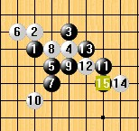左图是残月1
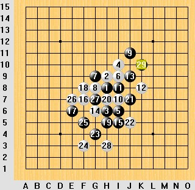左图是瑞星斜跳12过去认为的最强走法。黑棋在下边无法取胜， 29到上边做棋，局面黑优。
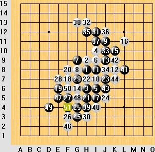
近来有人对这个走法做了改进。15手先活3，白棋外挡；再按照上图的思路演变，我们发现黑棋在上边制作一个眠3，刚好可以在下边补出一套VCF取胜。
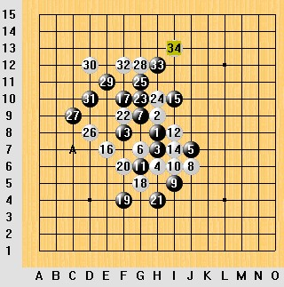再看左图，黑棋在上边局部无法取胜，希望往下发展。这里的A点，是很容易想到的联系上下的办法，但这样无法直接取胜。我们设想假如黑棋在E5,D6事先有一个黑子的话，那么刚好就补出一套VCF。
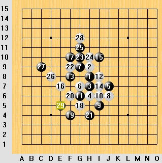
在这种思路指导下，找到这个29就变得显而易见。拆棋分析这个29是必胜的。
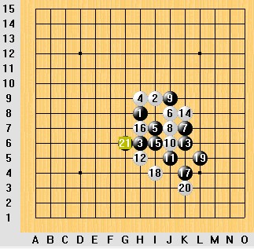
补杀技巧在拆棋中的应用出现很早很早。个人最早接触这个技巧是在04年，当时和sosei一起拆明星，曾遇到左图这个局面。至20由于白棋12、18的反活3，右边黑棋刚刚好无法必胜。Sosei的21手补杀，处理掉白反3使右边局部黑棋成杀。
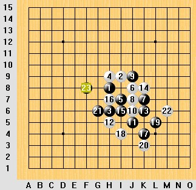
之后白棋无论防在右边任何地方，黑棋都可以在左边进攻取胜。
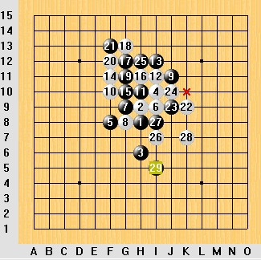
04年研究的一个突破是棋情终结了瑞星3打。由于瑞星3打白棋在右边有巨大优势，所以大多人都在右边找进攻点。这是很正常的思路，但黑棋都刚好存在唯一防。如图，29活3就是这个28后边的唯一防。
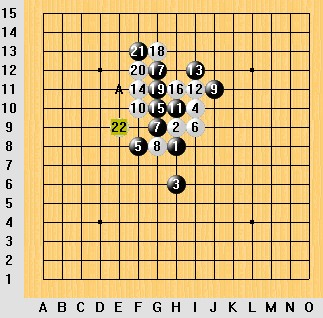
by:web版 IP：
已记录
补杀只是没有公认统一的名称，实际操作中掌握该技巧的棋手非常多，并且在实战中有很广泛的应用。与拆棋不同的是，实战中补杀往往无法必胜，棋手也并不一定是为了必胜而补杀。补杀还可以有其他的作用，比如控制，骗杀等等。以下选取部分棋手实战中补杀技巧的应用。（毫无疑问肯定有非常多经典补杀的对局，这里我只能选取自己比较熟悉的对局，并非有意忽略、厚此薄彼，未提及的经典望大家见谅。）
黄圣明控制性的补杀：
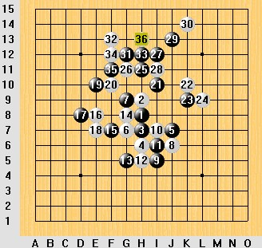左图是2009年智运会小天（白）对黄圣明的对局。到30，假如黑棋直接进攻将无法取胜。
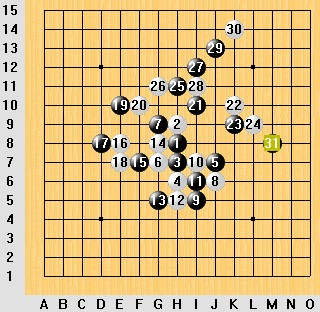
但假如31在m8补一手，结合上图的分析我们就能发现黑棋刚好在右边局部补出一套杀；同时31手攻守兼备，控制局面。 这也是实战黄圣明选择的31。
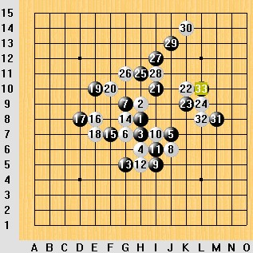
如图，黄圣明的33手依然是补杀，同时控制局面。大家尝试自己分析。
吴镝的中盘补杀：
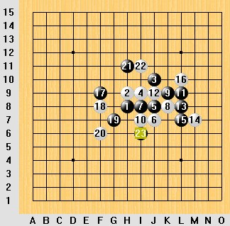左图摘自吴镝07年参加世锦赛的一盘棋，他本人也在自己空间写了棋评，大家有兴趣还不妨去采访下他。实战到22，黑棋左上进攻刚好无杀，23手针对性的补杀。
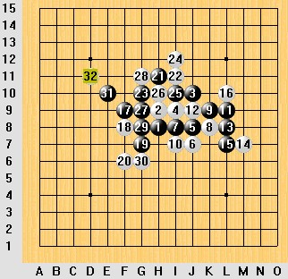
假如没有23，黑棋直接进攻白棋可以按左图的方式防住。
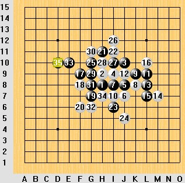
by:web版 IP：
已记录
1，补杀的入门是找到实现补杀的点，但补杀的关键并不在于能否找到补杀的点，而是证明补杀的这个点足够好。
2，以上补杀实例有些很直观，有些却很复杂，需要细心耐心的体会才能理解。另，补杀补得越含蓄，对手就越容易上当受骗。
3，补杀不是什么棋理，也不是什么必杀技，它只是选点众多技巧中的一种。相同的技巧，计算力越强，对棋理解越深，威力就越大。
4，补杀常被用于联系全盘（多个局部），但不等于掌握这个技巧就能随心所欲联系全盘（多个局部）。事实上很多时候想连都连不上，并不是不存在实现补杀的点，而是补杀的点其他属性不够好，可以应用其他技巧找到更好的选点。有人因为无法全面认识五子棋技巧，认为五子棋是更注重局部的，这样的看法就太片面了。
5，有人说补杀是联系多个局部进攻的技巧。我不好说这样的观点错误，但这样的想法给我感觉将补杀的应用范围局限住了，比如补杀在实战中常用于控制和设陷阱。
连环补杀欣赏（摘自一盘对局，13~1 很好很强大。。。 最初看到补杀这一概念是在ando的《空间与连接》里面。当然那里文章里没有出现补杀这个词。只是运用了这一技巧。即进攻方的VCT由于防守方的一些子力的存在使得杀棋差一点而不能成立。而这“差一点”需要在别的地方做一手棋，来完成这个VCT。而且这个做棋通常是隐蔽的、不直接的，甚至和原来设想的VCT路线没有关系。但却对VCT起到了必要的连接作用。 好东西！受益匪浅。 我的理解就是做VCT。只是这种做VCT比较隐蔽，具体来说就是在一个局部选点，而这个点可以与另一个局部能连接起来（通常说的借用），共同构成VCT杀。 发现2个错误：1。我和你那盘不是这样下的。2.清清 那盘她是黑 白是刘超 ［ 厦门小天 于 2010-6-25 7:55:15 时花20金币送鲜花一朵］ “补杀不是什么棋理，也不是什么必杀技，它只是选点众多技巧中的一种。” 略懂略懂，原来有时补的是真杀有时是假杀呀，只是一种行棋技巧，很重要的技巧！很受用，谢谢！ 原来高手是这么玩棋的，高！
#5 Re:补杀技巧简介（修订版）-首发完整版 作者：雨一直下 发表时间：2010-6-23 17:26:51
有志哥也偷懒了，干嘛不发成IWZQ的棋谱格式
#6 Re:补杀技巧简介（修订版）-首发完整版 作者：小帮帮 发表时间：2010-6-23 21:05:57
分析得很细致，就是说得又似乎太过业余的专业，不好看懂哦
#7 Re:补杀技巧简介（修订版）-首发完整版 作者：aabb 发表时间：2010-6-23 23:07:29
#8 Re:补杀技巧简介（修订版）-首发完整版 作者：雪飞 发表时间：2010-6-24 11:56:35
#9 Re:补杀技巧简介（修订版）-首发完整版 作者：用心学习 发表时间：2010-6-24 13:17:26
原来，听了小天老师讲补杀的课，今天再看这个帖子，收获很多，学习啦！
#10 Re:补杀技巧简介（修订版）-首发完整版 作者：萧翎 发表时间：2010-6-24 23:09:15
#11 Re:补杀技巧简介（修订版）-首发完整版 作者：耳痛 发表时间：2010-6-24 23:09:57
#12 Re:补杀技巧简介（修订版）-首发完整版 作者：宣其 发表时间：2010-7-7 12:16:42
受益匪浅~谢谢了~
#13 Re:补杀技巧简介（修订版）-首发完整版 作者：半信半疑 发表时间：2011-2-21 21:14:28
#14 Re:补杀技巧简介（修订版）-首发完整版 作者：虚无 发表时间：2011-5-14 11:49:15
有自己一套进攻策略，怎样去实现这一策略的方法，从而实现43、禁手取胜，不要过分复杂化。
#15 Re:补杀技巧简介（修订版）-首发完整版 作者：非黑既白 发表时间：2011-7-16 12:01:27
精彩！